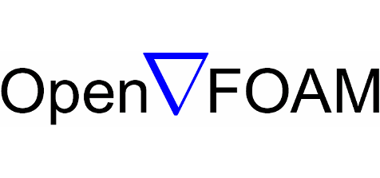

Parallel Programming in OpenFOAM

OpenFOAM is a widely used CFD toolbox in academia and industry. It is also used to solve HPC problems related to fluid dynamics. However, some problems can take too much time to execute. For computation-heavy problems, parallel programming can dramatically reduce the computation time.
OpenFOAM has native support for parallel programming with MPI but writing parallel programs in OpenFOAM is not the same as writing parallel programs with MPI.
It was difficult for me to learn parallel programming in OpenFOAM at the beginning of the SoHPC. This kind of blog could have helped me so much. So, that is why I decided to write this blog.
Disclaimer
Most of the information presented here is derived from my experience during the Summer of HPC project which is developing a parallel pre-processing utility in OpenFOAM. I am neither expert in parallel programming nor OpenFOAM. Therefore, please use these examples at your own risk.
Prerequisites
- The compiled version of OpenFOAM-dev (v2106 is used in this blog but unless it is too old, you can use any version)
- OpenMPI (for installation you can refer to this article)
- Knowledge of how to compile a program in OpenFOAM using
wmake
A Basic Hello World
Let’s write a basic hello world program and run it in parallel. The details of compiling the program are not given here. You can look at other OpenFOAM programs’ Make directory to have an idea of how to compile your program.
When we run our program, we have to provide an extra argument to let the compiler know that this run is not a serial run. Therefore, we have to include setRootCase.H file inside the main function to set up the basic command-line arguments to provide the program.
#include "setRootCase.H"
The reason why we add this line inside the main function is that this header file is constructed from the arguments (int argc, char* argv[]) in the main function.
By default, our program searches for processor directories and if it does not find any directory like processor2, it throws an error saying that it could not find this directory. If you do not want your program to search existing processor directories, you can disable this behavior by:
argList::noCheckProcessorDirectories();
If you want to disable this behavior, add this line above the line where you include setRootCase.H file.
So far so good. Now, the final step is to print the message to the console:
Pout<< "Hello from process " << Pstream::myProcNo() << endl;
In serial applications, Info is used for printing messages to the console. For parallel application, Pout is used. However, Info can still be used in parallel applications. Keep in mind that Info only prints the message in the master process.
This is what the final program looks like:
#include "fvCFD.H"
int main(int argc, char* argv[]) {
argList::noCheckProcessorDirectories();
#include "setRootCase.H"
if (!Pstream::parRun())
{
FatalErrorInFunction
<< ": This utility can only be run parallel"
<< exit(FatalError);
}
Pout<< "Hello from process " << Pstream::myProcNo() << endl;
}
After you compile the code, you can run this program by:
mpirun -np <number-of-proc> <program-name>
I also added a check to make sure the program is run only in parallel. If someone tries to run it in serial, it will complain and throw an error.
Pstream Class and Collective Communication
As you can see from the above example, we did not use MPI routines in our program. OpenFOAM provides a wrapper class called Pstream. We can use this class for the inter-processor communications stream.
For instance, gathering information from other processes is a common task. For that, we can use Pstream class’ gather method:
labelList data(10, Pstream::myProcNo() + 1);
Pstream::gather(data, multiplyOp<labelList>());
if (Pstream::master())
{
Pout << data << endl;
}
Pstream::scatter(data);
Pout << data << endl;
Above code block gathers labelList data from each process multiplies these lists and scatters the result to all processes.
There are many binary operations that can make collective communication effective. Here are some of the available binary operations on labelList data structure:
plusOp<labelList>()minusOp<labelList>()divideOp<labelList>()minOp<labelList>()maxOp<labelList>()
For the full list, please checkout ops.H file.
There are many other methods that Pstream class provides. You can check out Pstream.H file for the rest.
One of the problems I faced during this summer was this problem:
You have 8 cells of a computational domain and split the domain into 4 partitions. The first two numbers of the list are calculated on processor 0, the second two numbers of the list are calculated on processor 1, etc. The data looks like this:
processor 0: 8 (0 0 0 0 0 0 0 0)
processor 1: 8 (0 0 1 1 0 0 0 0)
processor 2: 8 (0 0 0 0 2 2 0 0)
processor 3: 8 (0 0 0 0 0 0 3 3)
How can you gather the list from all processors like 8 (0 0 1 1 2 2 3 3)?
The numbers are arbitrary but explain my problem very well. Here is the code snippet that solved my problem:
#include "PstreamReduceOps.H"
// for setting up the data
labelList data(8, 0);
data[Pstream::myProcNo() * 2] = Pstream::myProcNo();
data[Pstream::myProcNo() * 2 + 1] = Pstream::myProcNo();
reduce(data, sumOp<labelList>());
Pout << data << endl;
Point-to-Point Communication
Let me illustrate this topic with an example. Below you can see an example of point-to-point communication:
labelList data(Pstream::nProcs(), Pstream::myProcNo() * 10);
// -1 indicates empty
labelList recvData(Pstream::nProcs(), -1);
// send
if (Pstream::myProcNo() < Pstream::nProcs() / 2)
{
label destination = Pstream::nProcs() - (Pstream::myProcNo() + 1);
OPstream send(Pstream::commsTypes::blocking, destination);
send << data;
}
// receive
else
{
label target = Pstream::nProcs() - (Pstream::myProcNo() + 1);
IPstream recv(Pstream::commsTypes::blocking, target);
recv >> recvData;
}
Pout << recvData << endl;
Assume the number of processes used in this program is 10. In that case, process 0 communicates with process 9, process 1 communicates with process 8, etc. Receiving processes hold their data in another variable called recvData. In the end, each process prints its data to the console. As you can see above, to send or receive data you have to create OPstream or IPstream objects, respectively. You can consider these as MPI_Send and MPI_Recv. In order to avoid deadlocks, make sure that the number of OPstream is equal to the number of IPstream.
Conclusion
There are many things that can be done with Pstream. However, it is not possible to fit everything into one post. If you think something is wrong or you want extra examples, please let me know in the comments.
Thank you for reading.